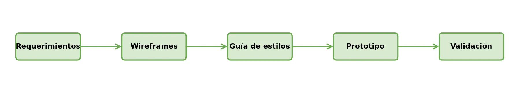
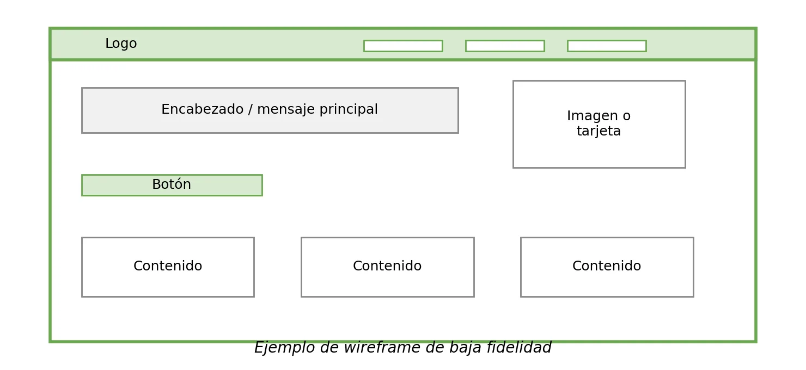
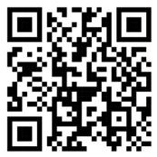
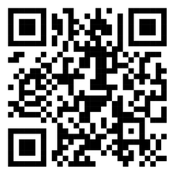
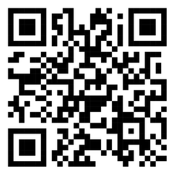

🎨 Antes de programar, hay que diseñar
Después de formular y planificar el proyecto web en la Unidad 1, tu equipo cuenta con un problema definido, usuarios objetivo, requerimientos, alcance, entregables y una organización inicial de trabajo. El siguiente paso consiste en representar visualmente la solución antes de comenzar a escribir código. Esta etapa permite imaginar cómo se verá la aplicación, qué pantallas necesitará, cómo navegará el usuario y qué elementos visuales facilitarán su uso.
En muchos proyectos web, los errores de diseño aparecen cuando se empieza a programar sin haber pensado previamente en la experiencia del usuario. Si las pantallas no responden a los requerimientos, si la navegación es confusa o si cada integrante diseña con colores y estilos diferentes, el frontend puede terminar siendo poco claro, desordenado o difícil de utilizar. Por eso, antes de maquetar en HTML y CSS, es necesario diseñar wireframes, organizar una guía de estilos y construir un prototipo navegable. 🧭
Esta guía corresponde al primer tema de la Unidad 2: Diseño e implementación del frontend del proyecto web. En ella estudiarás los conceptos de UX, UI, wireframes, prototipos y guía de estilos, con actividades prácticas para transformar la formulación de tu proyecto en una propuesta visual inicial.
Al finalizar, tu equipo entregará los wireframes de las pantallas principales, una guía de estilos básica y un prototipo navegable inicial 📱 — la base para la siguiente guía, orientada a la maquetación con HTML5, CSS, Flexbox, Grid y diseño responsivo.
✨ Diseñar antes de programar no atrasa el proyecto: lo acelera, porque corregir un wireframe cuesta minutos; corregir código ya construido cuesta horas. 🚀

Objetivos de aprendizaje
- 🧠 Reconocer la importancia del diseño UX/UI como etapa previa a la implementación del frontend del proyecto web.
- 🧩 Diferenciar los conceptos de experiencia de usuario, interfaz de usuario, wireframe, prototipo y guía de estilos dentro del proceso de diseño frontend.
- 🔗 Relacionar los requerimientos funcionales definidos en la Unidad 1 con las pantallas necesarias para el proyecto web.
- 📐 Elaborar wireframes de baja fidelidad que representen la estructura inicial de las pantallas principales del proyecto.
- 🎨 Definir una guía de estilos básica que incluya colores, tipografías, componentes visuales y criterios de organización de la interfaz.
- 🖱️ Construir un prototipo navegable inicial que permita visualizar el recorrido principal del usuario antes de iniciar la maquetación.
🔍 Modo exploración: recorre las 5 estaciones y suma puntos
⭐ Puntos: 0
Actividades
🎮 Modo misión activado — completa las 6 misiones de tu equipo
🏅 Misiones: 0/6
🕵️ Misión 1: Cuestionario de comprensión
Resuelve el cuestionario de forma individual y relaciona tus respuestas con el proyecto web de tu equipo.
📝 Producto esperado: El cuestionario respondido de forma individual por cada integrante.
🔗 Misión 2: Revisión de requerimientos y pantallas necesarias
Retomen su matriz de requerimientos de la Unidad 1 y seleccionen las funciones principales que deben representarse en el diseño del frontend.
| Requerimiento seleccionado | Usuario relacionado | Pantalla necesaria | Acción principal del usuario |
|---|
📝 Producto esperado: Tabla con al menos 5 requerimientos relacionados a sus pantallas correspondientes.
📐 Misión 3: Elaboración de wireframes

Elaboren wireframes de baja fidelidad para las pantallas principales del proyecto (a mano, en papel o en una herramienta digital).
| Pantalla | Propósito | Elementos principales | Estado |
|---|---|---|---|
| Inicio | |||
| Registro o acceso | |||
| Pantalla principal | |||
| Formulario principal | |||
| Listado o confirmación |
📝 Producto esperado: Wireframes de baja fidelidad de las pantallas principales del proyecto.
🎨 Misión 4: Construcción de la guía de estilos
Definan las decisiones visuales básicas que orientarán la construcción del frontend. Deberán mantenerse durante las siguientes guías.
| Elemento | Definición del equipo |
|---|---|
| Colores principales | |
| Colores secundarios | |
| Tipografía para títulos | |
| Tipografía para textos | |
| Estilo de botones | |
| Estilo de formularios | |
| Componentes reutilizables |
📝 Producto esperado: Guía de estilos básica con colores, tipografías, botones, formularios y componentes definidos.
🖱️ Misión 5: Prototipo navegable
A partir de los wireframes y la guía de estilos, construyan un prototipo navegable inicial (en Figma, Canva, PowerPoint, Draw.io u otra herramienta) que muestre el recorrido principal del usuario.
📝 Producto esperado: Prototipo navegable inicial que permite observar el recorrido principal del usuario.
🎤 Misión 6: Socialización del diseño inicial
Presenten en máximo cinco minutos sus wireframes, guía de estilos y prototipo inicial. El docente y los compañeros podrán hacer observaciones sobre claridad, navegación, coherencia visual y relación con los requerimientos.
📝 Producto esperado: Presentación realizada y ajustes incorporados al diseño inicial.
📦 Evidencia de aprendizaje: Producto de avance del frontend
Cada equipo debe entregar un producto de avance relacionado con el diseño e implementación del frontend que incluya:
📊 Criterios de valoración de la actividad
| Criterio | Nivel esperado |
|---|---|
| Relación con los requerimientos | Las pantallas propuestas responden a los requerimientos funcionales y a las necesidades de los usuarios. |
| Claridad de los wireframes | Los wireframes representan de forma ordenada las pantallas principales del proyecto. |
| Coherencia visual | La guía de estilos define colores, tipografías y componentes aplicables al frontend. |
| Navegación del prototipo | El prototipo permite observar el recorrido principal del usuario. |
| Argumentación del diseño | El equipo explica con claridad las decisiones tomadas y los ajustes realizados. |
Evaluación
Comprueba lo que has aprendido. Selecciona la respuesta correcta para cada pregunta.
Recursos para profundizar
Para ampliar tu conocimiento, te recomendamos explorar los siguientes recursos:
-
Prototype & Wireframe Guides (Figma)
Biblioteca de guías y plantillas de Figma sobre wireframing y prototipado, con artículos sobre fidelidad, MVP y validación de diseño.
Ir al recurso
-
Material Design 3 (Google)
Sistema de diseño de Google con fundamentos y componentes para construir interfaces visuales consistentes.
Ir al recurso
-
10 Usability Heuristics (Nielsen Norman Group)
Las diez heurísticas de usabilidad de Jakob Nielsen, con explicaciones y ejemplos aplicados a interfaces reales.
Ir al recurso